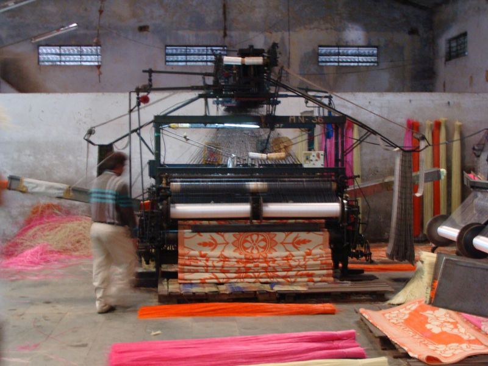
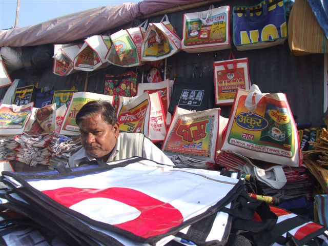

Handgemaakt van ver
Al meer dan 25 jaar probeert Casa Maria authentieke, handgemaakte spullen uit verre landen te halen. Er wordt zoveel mogelijk samengewerkt met kleinschalige bedrijfjes en werkplaatsen, voor spullen waarvoor eerlijke prijzen zijn betaald.
Iets gezien dat je niet in de webshop terugvindt? Stuur een mailtje.

